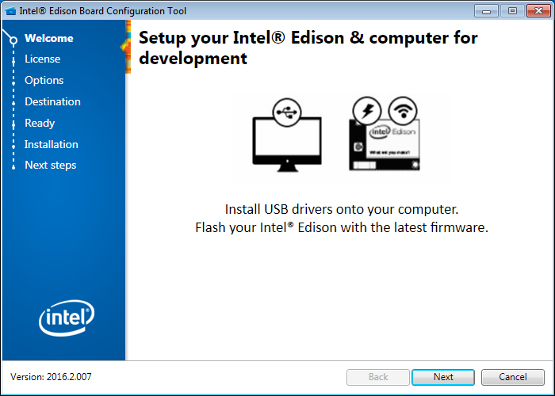
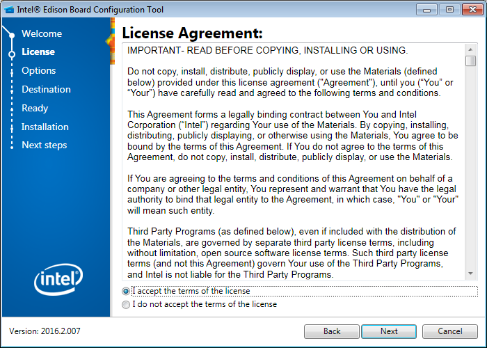
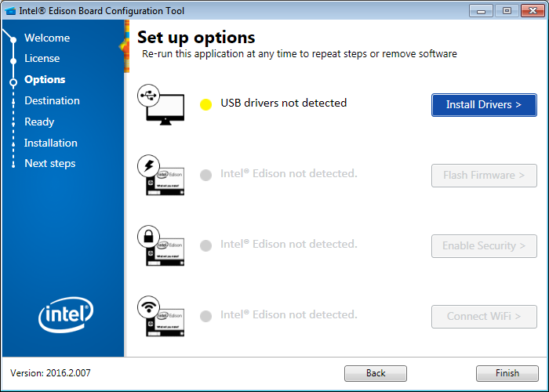
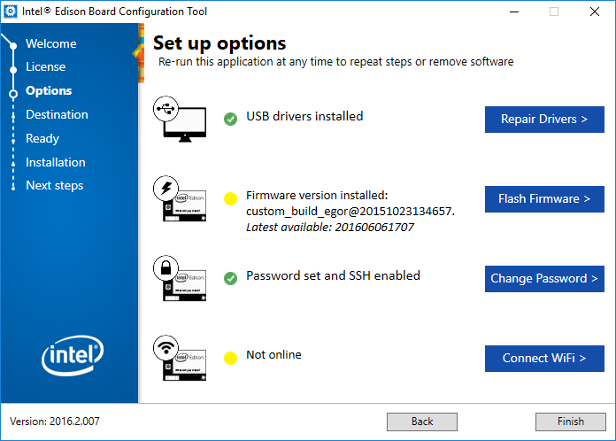
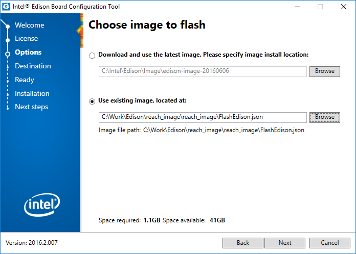

Reprogrammer le Firmware
Quand reprogrammer le firmware¶
Sur cette page vous trouverez les informtions sur comment reprogrammer le firmware du module Reach. Veuillez noter que vous n'avez pas besoin de faire cela à moins que vous voulez restaurer le module Reach à un état antérieur ou si une nouvelle version de l'image du firmware est mise à disposition. Si votre module Reach a la version 0.4.9 de ReachView il est nécessaire de le reprogrammer avec la nouvelle image firmware pour recevoir les mises à jour et du support.
Plus d'informations sur comment mettre à jour l'application ReachView est disponible dans la section d'introduction.
Téléchargement du firmware Emlid Reach RTK¶
Vous pouvez obtenir la dernière version ici:
Il existe deux possibilités pour reprogrammer l'image. L'outil de configuration basé sur Intel Edion (Intel's Edison Board Configuration Tool) ou un script CLI (Command Line Interface).
Procédure de programmation¶
Guide GUI (avec Interface Graphique)¶
Télécharger l'outil "Intel Edison Board Configuration Tool"¶
L'outil est ici. Il est disponible pour Windows, Mac et Linux.
Programmation du Reach¶
- Brancher le module Reach à cet ordinateur
- Décompresser l'image
- Démarrer l'outil "Intel Edison Board Configuration Tool". Appuyez sur suivant Next.

- Lire la license, en accepter les termes et appuyer sur Next deux fois

- Installer les drivers (Pour Windows seulement)

- Après l'installation appuyez sur Flash Firmware

- Choisissez le deuxième éléments: Use existing image, located at:
- Choisissez le chemin vers l'image décompressée (Vous devez pointer vers un ficher .json pour Windows et .hddimg pour Linux)
- Appuyez sur Next deux fois

- Poursuivre à la section "Après la programmation"
Guide avec le Terminal¶
Windows¶
Avant la programmation:
- Installer les drivers Intel Edison
- Décompresser l'image téléchargée
- Déconnecter le module Reach s'il est connecté
Pour programmer:
cddans le répertoire de l'image- Executer
flashall.bat - Connecter le module Reach
- Suivre la progression dans la fenêre du terminal
- Poursuivre à la section "Après la programmation"
Mac OS X¶
Avant la programmation:
- Décompresser l'image téléchargée
- Installer homebrew
- Installer les dépendances avec
brew install dfu-util coreutils gnu-getopt - Déconnecter le module Reach s'il est connecté
Pour programmer:
cddans le répertoire de l'image- Executer
sudo ./flashall.sh - Connecter le module Reach
- Suivre la progression dans la fenêre du terminal
- Poursuivre à la section "Après la programmation"
Linux¶
Avant la programmation:
- Décompresser l'image téléchargée
- Déconnecter le module Reach s'il est connecté
To flash:
cddans le répertoire de l'image- Executer
sudo ./flashall.sh - Connecter le module Reach
- Suivre la progression dans la fenêre du terminal
- Poursuivre à la section "Après la programmation"
Après la programmation¶
Une fois la première étape de programmation effectuée, le module Reach va redémarrer. Ne le déconnectez pas avant la fin du redémarrage ou avant qu'il est terminé le processus de configuration.
Dpeuis la version 1.2 de l'image, les signaux de la LED sur le module Reach pendant le démarrage sont les suivants:
- Magenta pendant le démarrage de l'appareil
- Eteint, puis Blanc pendant une seconde pour signifier le démarrage du script
- Clignottement Jaune lors de la recherche de réseaux connus.
- Vert après la création du hotspot